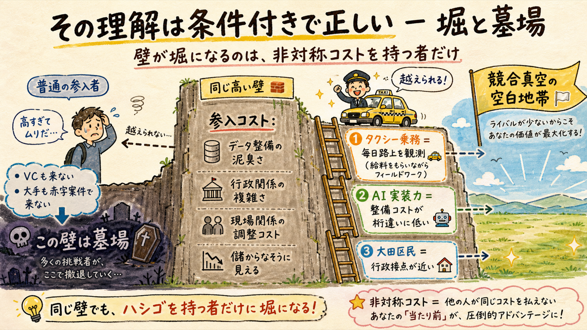
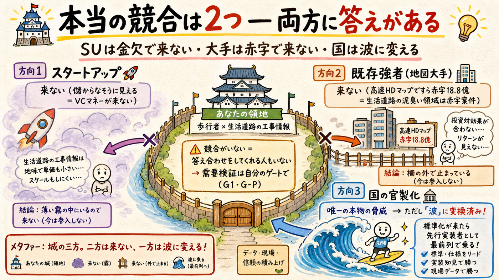
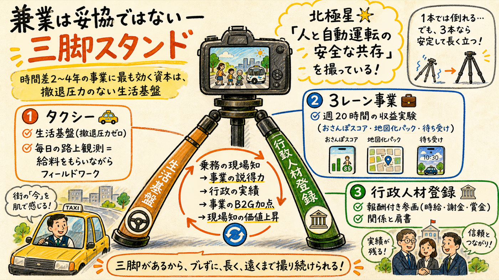
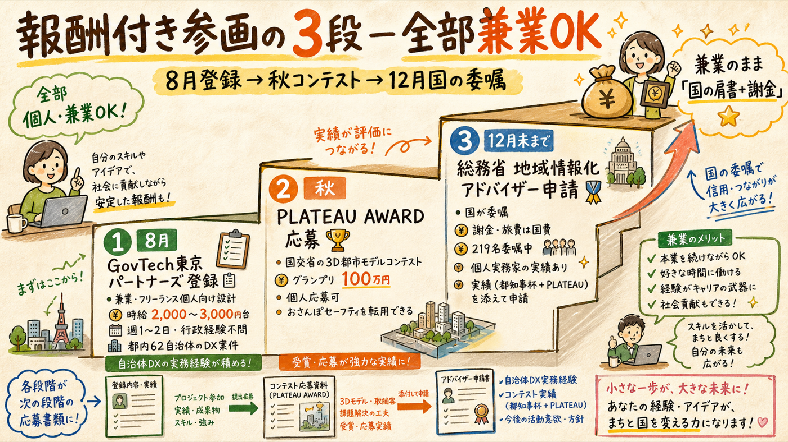

2つの問いに答える。①「参入コストが高い＝競合が出にくい」は条件付きで正しい — 壁が堀になるのは、他人より安くその壁を越えられる者だけで、あなたには非対称が3つある。②報酬をもらいながら行政プロジェクトに関わるルートは実在する（個人・兼業OKの制度を一次情報で確認済み）。そしてタクシー兼業は妥協ではなく、この事業構造への最適解と評価する。
「参入コストが高いから競合が出ない」のではなく「儲からなそうに見えるから来ない」

競合が出にくいのは事実で、理由は3つ: (a) 儲からなそうに見える — DMP（上場・高速HDマップの本命）が営業赤字18.8億円という公開情報がある以上、VCはこの領域に金を出さない。スタートアップは資金が湧かないので来ない。(b) 泥臭い — 現場関係・行政関係・生活道路のデータ整備は、大手にとって赤字案件なのでやらない。(c) 証拠 — 歩行者×生活道路の空白が何年も放置されているという事実そのもの。
ただし条件がある。壁は参入者全員に等しく高い — あなたにも。壁が「堀」になるのは、他人より安く越えられる非対称コストを持つ場合だけ。あなたの非対称は3つ: ①タクシー乗務＝毎日路上を観測（他の誰もが金を払って調べる「現場の実態」を、給料をもらいながら毎日見ている） ②AI実装力（この2日間で調査12本・実装・デプロイまでやった生産性。データ整備コストが桁違いに低い） ③大田区民（AV実証中の自治体に住民として接点を持てる）。この3つがある限り、他人には墓場でもあなたには堀。
怖いのはスタートアップではない

| 競合候補 | 評価 | 根拠・対処 |
|---|---|---|
| 🚀 スタートアップ | 来ない | 市場が小さく見える＋DMP赤字の公開情報 → VC資金が流入しない。個人の参入だけが可能な市場構造で、そこではあなたの非対称が効く |
| 🏢 既存強者（地図大手・DMP・ゼンリン） | 来ない（当面） | 高速HDマップですら赤字の彼らにとって、生活道路の泥臭い整備は最も採算が悪い領域。参入するなら「出来上がったデータを買収する」形＝それはあなたの出口（イグジット）になる |
| 🏛️ 国の官製化（xROAD・一元化） | 唯一の本物 — ただし波に変換済み | 世界調査の結論どおり: 国が枠組みを作った瞬間、周辺に事務代行・実装支援の市場が生まれる（仏Sogelinkの€10億はそれ）。監視シグナルはAIが常時追跡中で、動いたら最前列から乗る |
この事業構造に最も効く資本は「撤退圧力のない生活基盤」

三脚スタンドの循環: 乗務の現場知 → 事業とピッチの説得力 → 行政参画の実績 → B2G営業の加点 → 現場知の価値がさらに上がる。3本の脚は別々の仕事ではなく、互いを強くする1つの構造。
全部、個人・兼業OK。階段状に積める

| ルート | 報酬・条件（一次情報） | あなたとの適合 |
|---|---|---|
| ① GovTech東京パートナーズ （8月に登録） | 兼業・フリーランス個人向けの自治体DXマッチング。時給2,000〜3,000円台中心・週1〜2日・行政経験不問。契約は都内区市町村と（非常勤特別職/会計年度任用/業務委託） | 都内62自治体の案件に、都知事杯提出者の実績で応募できる。道路・地図系DX案件に当たれば本業テーマと直結。登録は無料・書類はAIが下書き |
| ② PLATEAU AWARD （国交省・秋エントリー） | 3D都市モデルのコンテスト。個人応募可・グランプリ100万円・賞金総額200万円。例年8月末〜11月エントリー [2026年度日程は要確認] | 「工事情報×3D都市モデル」はテーマど真ん中。おさんぽセーフティ資産を転用でき追加実装最小。受賞すれば③の申請書が強くなる |
| ③ 総務省 地域情報化アドバイザー （12月末までに申請） | 総務省が委嘱し自治体へ派遣。謝金・旅費は国費負担（自治体の負担ゼロ＝呼ばれやすい）。令和8年度219名委嘱・個人実務家の登録実績あり | 都知事杯＋PLATEAU応募の実績を添えて新規委嘱を申請。通れば兼業のまま「国の肩書＋謝金」— 北極星の語り手として最良のポジション |
| （参考）デジタル庁 非常勤専門人材 | 兼業可・テレワーク可・週3日型が典型。報酬水準は高い | 稼働が重くタクシーとの三立は厳しい。三脚の脚3が主になったら本末転倒なので、当面は見送り推奨 |
※ ならないルートも確認済み: PLATEAUコンソーシアム（法人中心・無報酬）、Code for Japan地域フィールドラボ（企業研修型・個人報酬なし）、都のフェロー（公募なし）、AV実証の個人枠（試乗モニターのみ）。出典: govtechtokyo.or.jp、digital.go.jp、soumu.go.jp、mlit.go.jp/plateau-next。2026-07-11取得。
脚3（行政参画）は週1日以内に制限する
| 時期 | 追記されるアクション | 既存プランとの関係 |
|---|---|---|
| 今週〜7/27 | 変更なし: フォーム提出のみ | G0不変 |
| 8月 | ＋GovTech東京パートナーズ登録（書類AI下書き・提出はあなた）／＋PLATEAU AWARD 2026年度日程の確認とエントリー判断 | 既存の8月タスク（ナビ登録・Code for Japan・デモ3点）と同じ「仕込み月」に追加。対人負荷は増えない |
| 秋 | ＋PLATEAU AWARD応募（おさんぽセーフティ転用・実装はAI主担当） | 3回接触モデル・スコアデモ公開と並走。賞金と実績の二毛作 |
| 12月末まで | ＋総務省地域情報化アドバイザー新規委嘱の申請 | G-Pゲート（10月末）の結果がどちらでも申請価値あり（肩書は全レーンに効く） |
ガードレール: 行政参画（脚3）は報酬が出る分、頼まれ仕事が増えて主客転倒しやすい。週1日以内・「北極星と3レーンに繋がる案件だけ受ける」を先に決めておく。三脚の目的はカメラ（北極星）を支えることで、脚を太らせることではない。